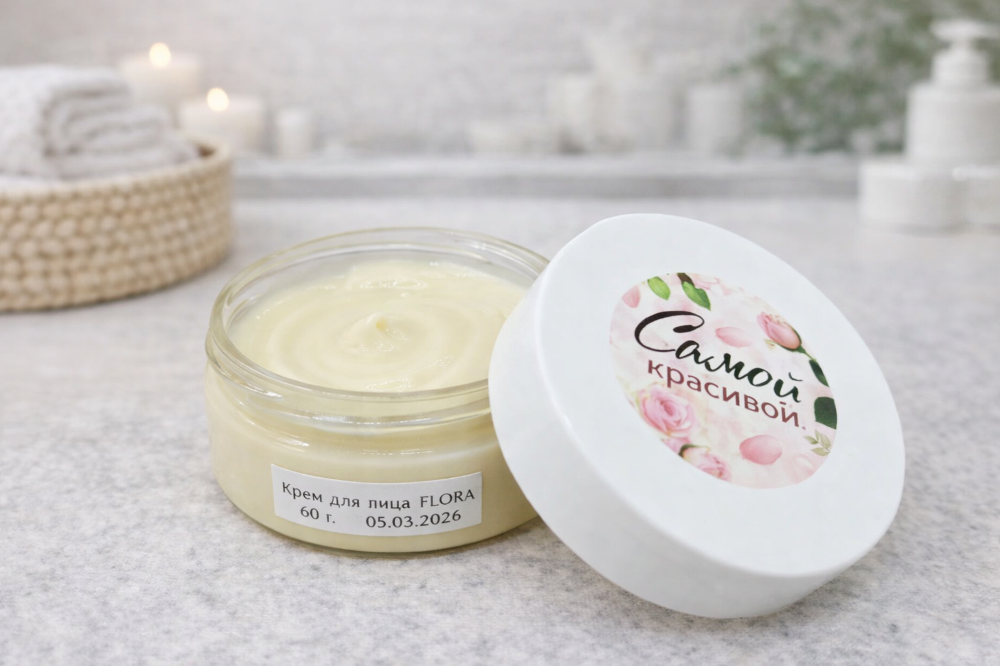

Сильный уход начинается не с баночки, а с ясной истории.
Эта страница собрана как обучающий split-screen: крупный визуал, плотный смысловой текст и далее спокойное раскрытие ценностей. Такой формат даёт бренду “массу” и помогает не сводиться к безликому каталогу.


Бренд звучит убедительно, когда в нём есть происхождение, характер и метод.
Здесь специально собран narrative-блок, который объясняет, откуда берётся продукт и почему его логика выглядит цельной. Для небольших beauty-проектов это особенно важно: людям нужно понимать, кто стоит за баночкой и почему уход не выглядит анонимным.
В учебном проекте это помогает сразу видеть разницу между “простым магазином” и брендом с позиционированием: второй быстрее формирует доверие и сильнее запоминается.